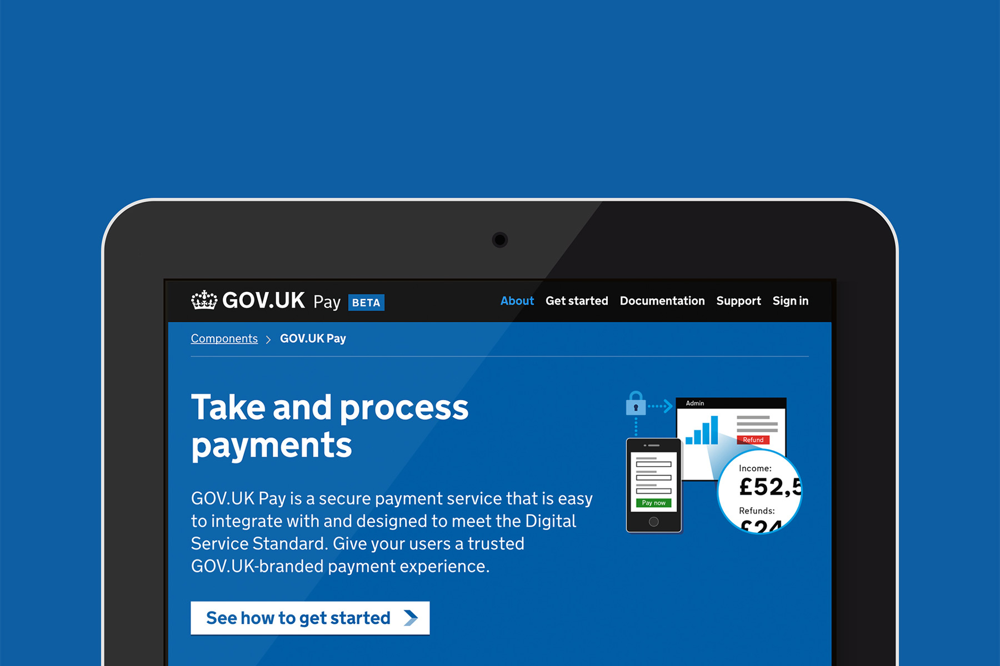
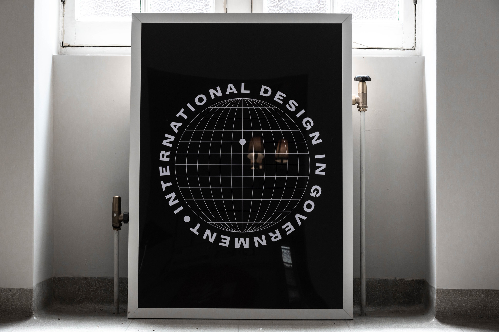
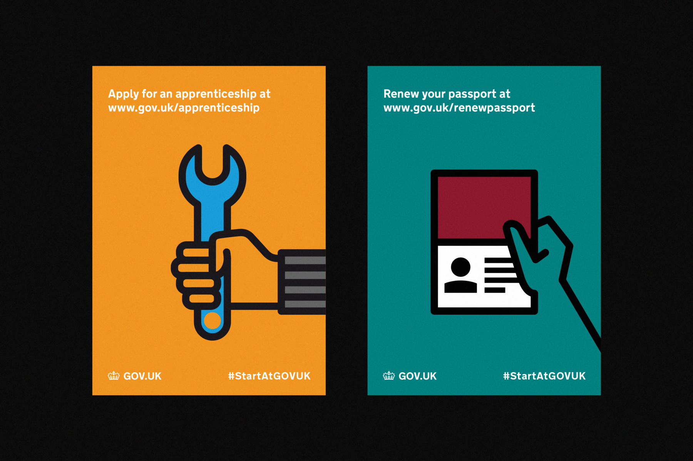

My name is Stephen McCarthy.
I build high performing and inclusive design teams.
I create and deliver effective product strategies.
I make products and services that are understandable, useful and beautiful.
I’m currently Head of Product Design and User Research for Which?. Before that I was Head of Design for GOV.UK and the UK’s Government Digital Service.
A brief overview on how we’ve been updating the product experience of this trusted brand

Creating a range of user-centred products for reuse across the public sector

Giving people useful information to help them through the cost of living crisis
Building the trusted GOV.UK design language from scratch

Building and maintaining a cross-government design community of 800+ people

Designing an accessible and reusable payments service for the public sector

Creating a brand for the International Design in Government community and their series of events

Adapting the trusted GOV.UK design language for marketing campaigns

Creating and running a compelling series of events to build a wider GovDesign community of over 2,000 people

Event branding and design for this premier public sector digital event

Using design to build a strong org culture
Services Week
Creating design assets for this annual event highlighting strong service design in a public sector setting

GOV.UK Coronavirus response
Getting the right information to people at the right time during a time of national importance

Building a brand for this innovative cultural institution

Designing a new publication for Public Digital

GOV.UK comms
Building a simple GOV.UK corporate comms style
ConCon
Event branding for the annual cross-government content conference
A short blog post outlining the responsibility we have as designers to give users understandable information

England’s Burning
Using pictograms to tell the important story of the UK riots in 2011 – published by Unit Editions

Newspaper pictograms
Defining a point in time using pictograms

GDS Academy
Building a brand for this popular government training org
Open Government Licence (OGL)
Creating an iconic logo that can be recognised at small sizes

Let's Set Sail
The Nothingness of Now – EP prints